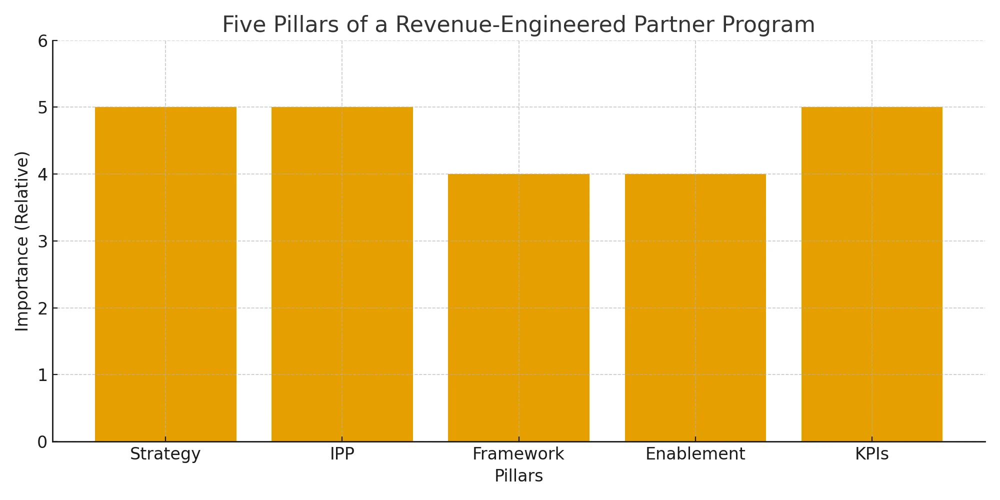
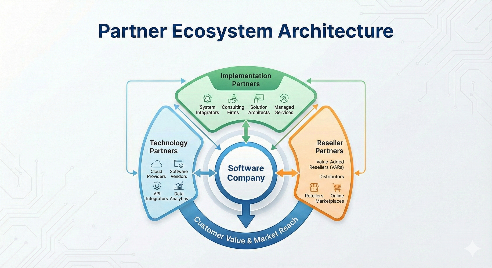
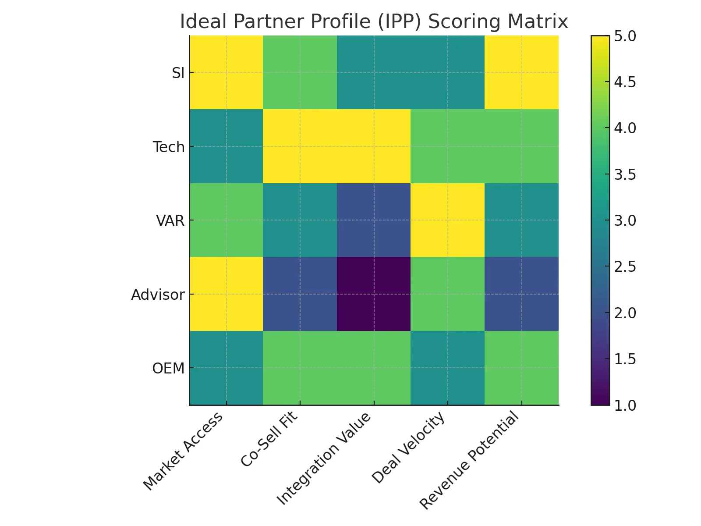
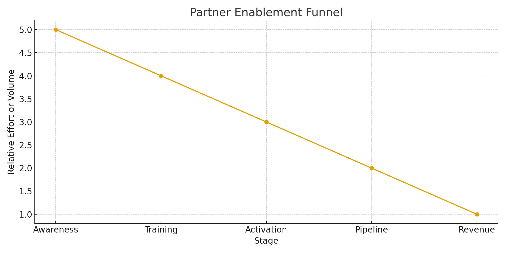

Overview
Executive Summary
Most SaaS partner programs fail—not because partnerships don't work, but because they are launched without a real design. Logos get collected. Announcements get written. Very little revenue appears.
The truth is simple: revenue-accelerating partner programs are engineered, not improvised. This whitepaper introduces a strategic framework for building partner ecosystems that support real pipeline, faster sales cycles, and scalable access to your ideal customers.
- Strategy & Vision
- Ideal Partner Profile (IPP) & Ecosystem Mapping
- Program Framework & Partner Motions
- Partner Enablement & Acceleration
- Monitoring, KPIs & Performance Management
Each pillar is grounded in real-world experience from a Partner Leader who architected and ran partner programs inside a scaling SaaS company—adapted here for CROs, Sales Leaders, and Partnership Heads who want to build a GTM engine, not a side project.
The CRO's Reality
Why Partner Programs Fail
If you've ever tried to build a partner program, you've likely seen some of these patterns:
- Partners signed based on enthusiasm—not alignment
- Field sales unsure when or how to involve partners
- No shared ideal customer profile (ICP) or value proposition
- Co-sell motions left undefined or unused
- Little or no enablement beyond a slide deck
- No KPIs or accountability rhythm
When this happens, partner programs become a distraction rather than a multiplier. The issue isn't the concept of partnerships—it's the lack of engineering behind them.
The Core Problem
Most companies expect partners to "just produce" without designing:
- Who the right partners are
- How they create revenue
- What motions they should run
- How success will be measured and managed
Partners don't fail. Systems do.
Framework
The Five Pillars of a Revenue-Engineered Partner Program
To move from ad hoc relationships to an engineered GTM engine, we use a five-pillar framework: Strategy & Vision, IPP & Ecosystem Mapping, Program Framework & Motions, Enablement & Acceleration, and Monitoring & KPIs.
Figure 1 · Five Pillars of a Revenue-Engineered Partner Program

Pillar 1
Strategy & Vision: Engineering the GTM Engine
A partner program cannot outperform the clarity of its strategy. Before a single agreement is signed, leadership needs to answer:
- What role should partners play in our GTM motion?
- Are we looking for reach, trust, service capacity, integrations, or all of the above?
- Which customer segments and buying centers do we want partners to unlock?
- How does this align with our sales, product, and customer success strategy?
This pillar turns "we should have partners" into a clear GTM hypothesis that sales, product, and partnerships can align around.
Pillar 2
Ideal Partner Profile (IPP) & Ecosystem Mapping
The Ideal Partner Profile (IPP) does for partnerships what the Ideal Customer Profile (ICP) does for sales: it focuses effort where it has the highest chance of paying off.
The IPP defines:
- Who the partner serves (industries, segments, geos)
- How the partner makes money today
- Where they sit in the customer's buying journey
- How your solution enhances or extends their offering
- What joint value looks like—for them and for you
Figure 2 · Partner Ecosystem Architecture

Once you have an IPP, you can map your broader ecosystem: system integrators, technology partners, OEMs, advisors, channels, and key service providers.
Figure 3 · IPP Scoring Matrix

Pillar 3
Program Framework & Partner Motions
With strategy and IPP in place, the next phase is building the actual operating system of the partner program—the framework that defines how partners are recruited, activated, and engaged.
Key components include:
- A defined recruitment and qualification process
- Structured onboarding and activation steps
- Clear co-sell and co-delivery motions
- Integration or solution packaging paths where relevant
- Governance: who owns what, how often you meet, and what gets decided
- Contracting standards and mutual expectations
Co-sell motions are particularly critical. Partners and sales teams need to know:
- When to bring each other into a deal
- How to share account context and intelligence
- Who leads which parts of discovery and demo
- What a "win" looks like for each party
Pillar 4
Partner Enablement & Acceleration
Even the best-aligned partners won't generate revenue if they aren't enabled. Enablement isn't a one-time webinar—it's an ongoing process that turns partners into confident advocates.
Effective enablement covers:
- Product fundamentals and differentiators
- Who to target and why (ICP/IPP alignment)
- Discovery questions and talk tracks
- Demo flows and outcome-based storytelling
- Pricing and packaging guidance
- Customer case studies and proof points
Acceleration comes from putting this enablement to work through:
- SPIFs and targeted incentives
- Joint webinars and events
- Account-based partner plays
- Co-marketing and content collaboration
- Structured pilot or "lighthouse" projects
Figure 4 · Partner Enablement Funnel

Pillar 5
Monitoring, KPIs & Performance Management
A partner program is only as strong as its feedback loop. Without data and rhythm, enthusiasm fades and deals stall.
Core KPIs include:
- Partner-sourced pipeline and revenue
- Partner-influenced pipeline and revenue
- Time-to-first-opportunity for new partners
- Conversion rates on co-sell deals
- Partner engagement scores (meetings, activities, opportunities)
- Co-marketing output and impact
These metrics need to be supported by an operating rhythm:
- Weekly or biweekly touchpoints with priority partners
- Monthly pipeline and performance reviews
- Quarterly Business Reviews (QBRs)
- Transparent dashboards shared with sales and leadership
Case Illustration
How an Engineered Partner Framework Accelerated ARR
In practice, the Partner Leader applied this framework inside a scaling SaaS company in a conservative, high-trust industry. While details are anonymized, the patterns are familiar:
Before
- Ad hoc partner discussions with no clear outcomes
- Field teams unsure which partners to prioritize
- Minimal partner-generated pipeline
- Deals moving slowly due to limited trust and reach
After
- A focused ecosystem of strategically selected partners
- Defined co-sell motions and enablement paths
- Partner-sourced and influenced opportunities in priority accounts
- Improved sales velocity through joint credibility and access
The result wasn't just "more activity"—it was a meaningful shift in how the company accessed and persuaded its ideal customers.
Conclusion
Why Engineered Partner Programs Are the Next GTM Advantage
Partner ecosystems are one of the most efficient ways to scale SaaS revenue. They extend reach, accelerate trust, and unlock opportunities that would take years to build organically. But they only work when they're designed as an integrated part of your GTM motion.
The takeaway is simple: engineered partner programs outperform improvised ones. CROs, Heads of Sales, and Partnership Leaders who treat partnerships as a core piece of revenue infrastructure gain an advantage that is hard for competitors to replicate.
Engineer a Partner Program That Actually Drives Revenue
This framework reflects the work of a Partner Leader operating inside a real SaaS company. Today, HCI Solutions uses the same principles to help software companies design and run partner programs that function as true GTM engines.
- Clarify your partner strategy and Ideal Partner Profile (IPP)
- Map and prioritize your partner ecosystem
- Design partner motions and program structure
- Build enablement and field activation tools
- Stand up KPIs, dashboards, and QBR rhythms
- Provide fractional partner management to keep the engine running